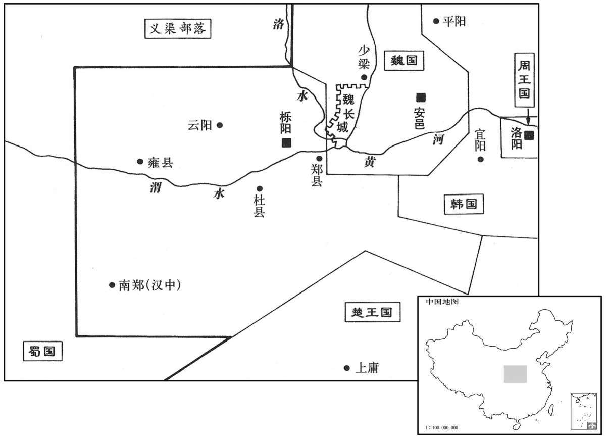

公元前362年资治通鉴：本年记事、原文与白话对照
按原书编年位置阅读；追叙和史论不等于本年发生的事件。白话采用所据译本，缺译不以生成译文补齐。
卷2 · 本年记事
公元前362年 · 显王在位第7年
七年〔（己未、前三六二）〕
本年事件索引（现代整理）

本年形势与背景参考图
魏败韩师、赵师于浍。〔浍，古外翻。括地志：浍水在绛州翼城县东南二十五里，水侧有皮牢城。〕
魏国在浍地击败韩国和赵国军队。
秦、魏战于少梁，〔班志：冯翊夏阳县，故少梁。师古曰：本梁国，为秦所灭，至惠文王十一年，更名夏阳。康曰：魏有大梁，故此称“少”以别之。少，诗沼翻。夏，户雅翻。更，工衡翻。〕魏师败绩；获魏公孙痤。〔左传：师大崩曰败绩。痤，才何翻〕
秦国、魏国在少梁激战，魏国军队大败而逃，公孙痤被俘。
卫声公薨，子成侯速立。
卫国卫声公去世，其子卫速即位为卫成侯。
燕桓公薨，子文公立。〔燕，因肩翻。考异曰：史记苏秦传谓之“燕文侯”。按春秋时北燕简公已称公，文公之子易王寻称王，岂文公独称侯乎！今从世家。〕
燕国燕桓公去世，其子即位为燕文公。
秦献公薨，子孝公立。〔索隐曰：孝公，名渠梁。〕孝公生二十一年矣。是时河、山以东强国六，〔河自龙门上口，南抵华阴而东流，秦国在河之西。山自鸟鼠同穴连延为长安南山，至于泰华，秦国在山之西。韩、魏、赵、齐、楚、燕六国皆在河、山以东。华，户化翻。燕，因肩翻。〕淮、泗之间小国十余，〔南阳郡平氏县东南有桐柏、大复山，淮水所出，东南至淮陵入海。泗水出鲁国卞县西南，至方与入沛。宋、鲁、邹、滕、薛、郳等国，国于其间。齐威王所谓“泗上十二诸侯”。〕楚、魏与秦接界。魏筑长城，自郑滨洛以北有上郡；〔郑县，周宣王母弟郑桓公封邑，班志属京兆。洛，水名，非伊、洛之洛也。水经注：渭水东过华阴县北，洛水入焉。洛水，古漆、沮之水也。又有长涧水，南出泰华之山侧长城东而北流注于渭。史记所谓“魏筑长城，自郑滨洛”者也。宋白曰：今华州东南魏长城是也。上郡，汉属并州，隋、唐之绥州、延州，秦、汉之上郡地也。滨，音宾。〕楚自汉中，南有巴、黔中：〔汉中郡，汉属益州，自晋以后为梁州。巴，即春秋巴子之国，汉为巴郡，属益州，唐为巴、渝、渠、果诸州之地。黔中，汉为牂柯郡之地，唐为黔中节度。黔，渠今翻。〕皆以夷翟遇秦，〔翟，与狄同。〕摈斥之，不得与中国之会盟。〔摈，必刃翻。与，读曰预。〕于是孝公发愤，布德修政，欲以强秦。〔愤，房粉翻，懑也，怒也。朱元晦曰：愤者，心求通而未得之意。〕
秦国秦献公去世，其子即位为秦孝公。孝公已经二十一岁了。这时黄河、崤山以东有六个强国，淮河、泗水流域十几个小国林立，楚国、魏国与秦国接壤。魏国筑有一道长城，从郑县沿着洛水直到上郡；楚国自汉中向南占有巴郡、黔中等地。各国都把秦国当作未开化的夷族，予以鄙视，不准参加中原各诸侯国的会议盟誓。目睹此情，秦孝公决心发愤图强，整顿国家，修明政治，让秦国强大起来。